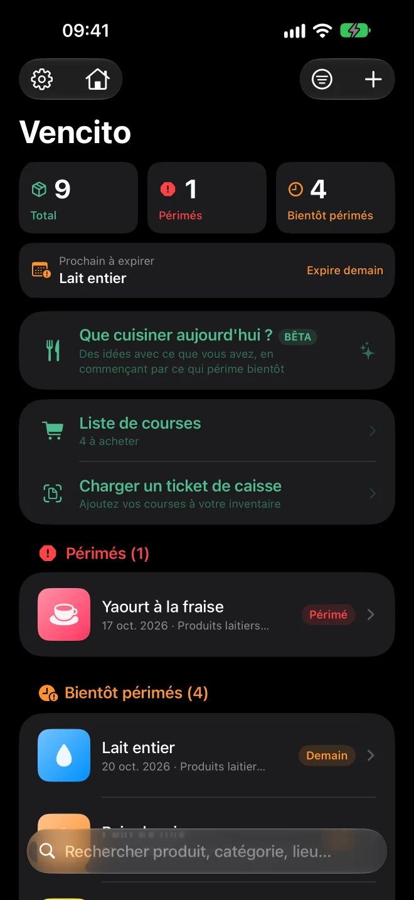
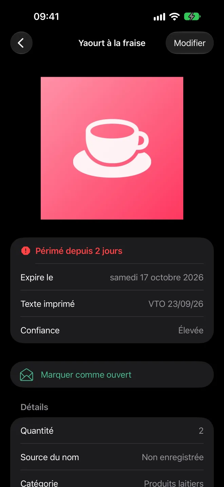
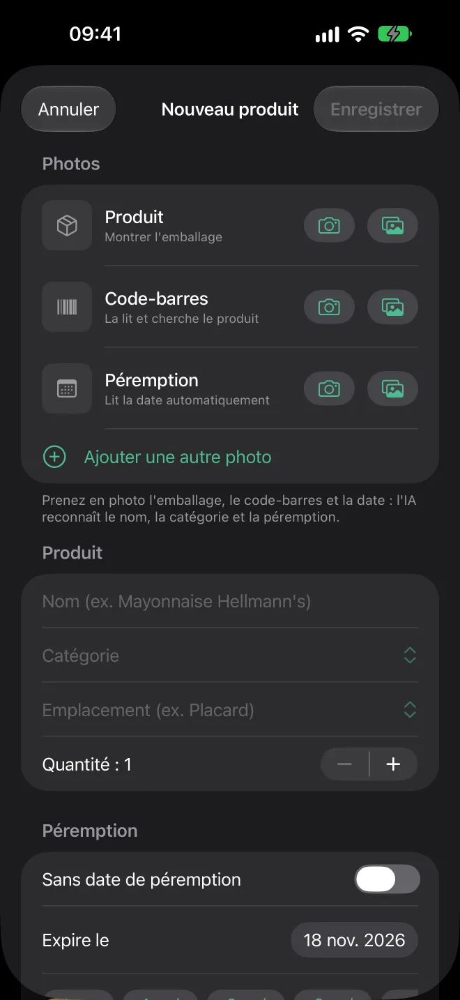
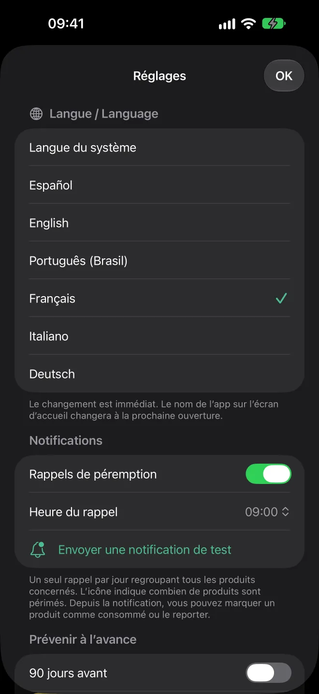
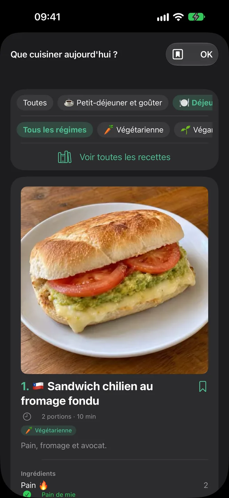
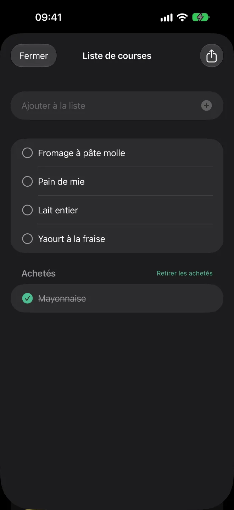
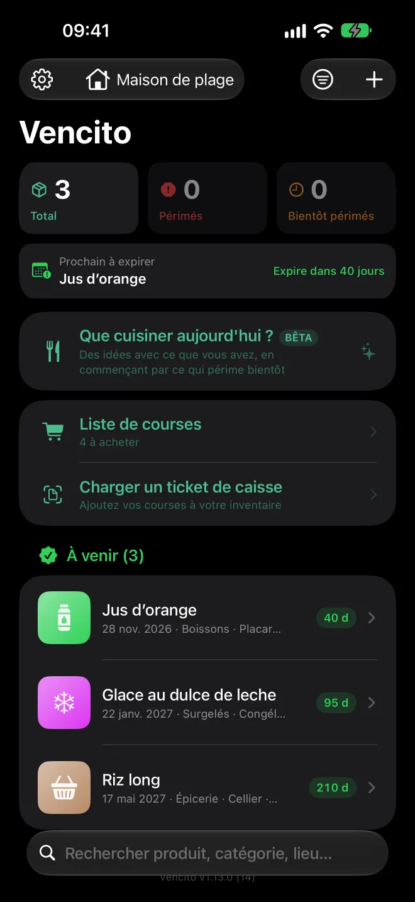
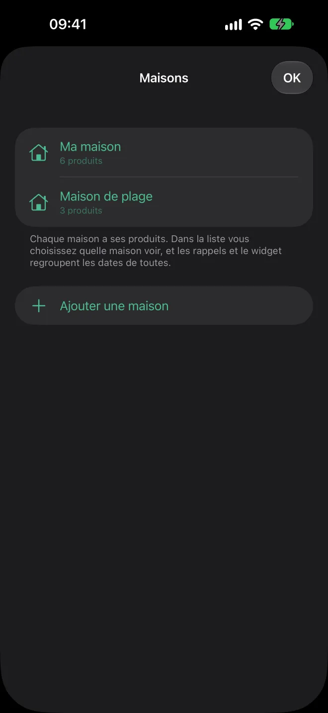
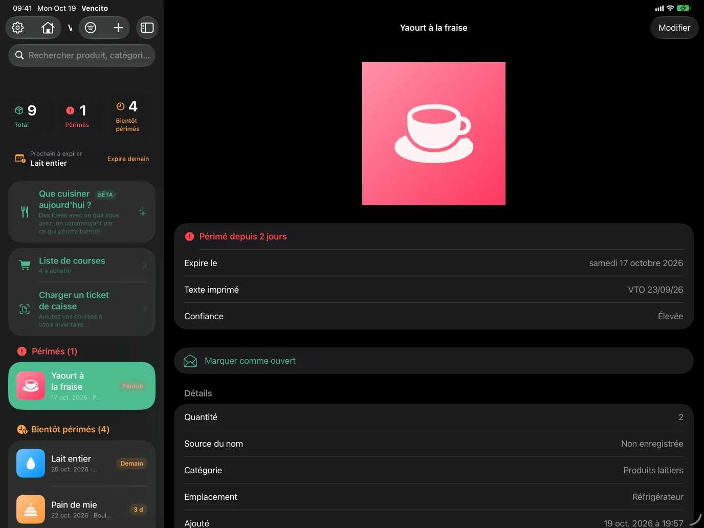

App pour iPhone et iPad
Rien ne se perd dans votre garde-manger.
Prenez l'emballage en photo et Vencito lit la date de péremption. Il vous prévient avant qu'elle n'arrive et vous montre quoi utiliser en premier.
Bientôt sur l'App Store · Gratuit · iOS et iPadOS 17 ou plus récent

Comment ça marche
Du rayon du magasin à votre frigo, en trois étapes
Prenez une photo
De l'emballage, avec la date visible. Ou pointez la caméra en direct : elle lit le code-barres et la date en même temps. Vous pouvez ajouter d'autres photos : produit, code-barres et date de péremption.
Vencito complète le reste
Il lit la date, propose un nom et une catégorie, et cherche le code-barres dans Open Food Facts et ses bases de cosmétiques et d'autres produits. Vous vérifiez et enregistrez.
Soyez prévenu à temps
Une notification par jour, à l'heure que vous choisissez, avec ce qui va bientôt se périmer : par défaut 30, 15, 7, 3 et 1 jour avant.
Essayez ici
Saisissez ce que dit l'emballage
C'est une version simplifiée du lecteur de dates de l'app. Il comprend les formats imprimés sur les emballages et préfère la date de péremption à la date de fabrication.
Date de péremption
—
—Fonctions
Conçu pour le garde-manger, le frigo et la pharmacie
Reconnaissance par IA
Sur les iPhone avec Apple Intelligence, le modèle d'Apple regarde la photo et remplit le nom, la catégorie et la date de péremption. Il fonctionne sur l'iPhone, hors ligne. Les idées de recettes par IA sont facultatives (bêta) et désactivées par défaut : activez-les dans Réglages.
Lecteur de dates
EXP 14/02/27, 25-08-2026, 25 AOUT 2026, 08/2027, DLC 04/27… Il distingue péremption et fabrication et lit des emballages en six langues.
Codes-barres
Scan en direct ou depuis la photo, avec EAN, UPC et QR. Open Food Facts (et ses bases de cosmétiques et d'autres produits, comme les médicaments sans ordonnance) remplit le nom, la marque et la catégorie.
Que cuisiner aujourd'hui ?
Des recettes avec ce que vous avez, en commençant par ce qui expire bientôt. Un catalogue de plus de 1 000 plats courants et faciles de plusieurs pays, avec photos et dans votre langue, pour le petit-déjeuner, le goûter, le déjeuner et le dîner, avec mode cuisine et recettes enregistrées. Il fonctionne hors ligne.
Plusieurs maisons
Gardez les produits de plusieurs maisons et choisissez laquelle afficher, ou voyez-les toutes ensemble. Les rappels et le widget réunissent les dates de toutes les maisons.
Liste de courses
Notez ce qu'il faut acheter, ajoutez d'un geste ce qui manque à une recette ou laissez l'app ajouter ce qui est épuisé. Cochez ce que vous avez acheté et partagez la liste en texte.
Plusieurs à la suite
Scan continu : code-barres, date, c'est fait. Si une date n'est pas lue avec certitude, l'app vous demande de la confirmer avant d'enregistrer.
Sans date de péremption
Pour ce qui ne périme pas ou n'a pas de date : enregistré à part, sans rappels.
Scan en direct
En une seule image, il lit le code-barres, la date de péremption et le nom du produit. Chaque valeur n'est confirmée que lorsqu'elle se répète, pour éviter les lectures floues.
Plusieurs photos par produit
Gardez une photo du produit, une du code-barres, une de la date de péremption et autant que vous voulez. Elles s'affichent dans une galerie à faire défiler.
Widgets
Sur l'écran d'accueil et l'écran verrouillé, avec ce qui expire ensuite. Touchez un produit pour l'ouvrir dans l'app.
L'état en un coup d'œil
Périmés, bientôt périmés et à venir, avec un résumé en haut et une vignette pour chaque produit.
Glissez pour consommer
Un glissement retire une unité ou supprime le produit. Une erreur ? Secouez pour annuler.
iPad
Liste et détail côte à côte, dans toutes les orientations et avec le multitâche. Avec un clavier, ⌘N ajoute un produit.
Six langues
Espagnol, anglais, portugais (Brésil), français, italien et allemand. Changez instantanément dans Réglages.
Accessible
Compatible avec VoiceOver et les grandes tailles de texte. Chaque produit est lu en entier : nom, état et date.
Vidéo
Vencito en 30 secondes
Tout en un coup d'œil, scan en direct du code-barres et de la date, et des recettes avec ce que vous avez.
La vidéo est en anglais. Le scan montré est une simulation illustrative.
Recettes
Un aperçu du catalogue
Plus de 1 000 plats courants et faciles de nombreux pays, chacun avec sa photo. En voici quelques-uns.

Escalope à la napolitaine
🇦🇷 · 40 min

Empanadas à la viande au four
🇦🇷 · 55 min

Chivito
🇺🇾 · 25 min

Chilaquiles rouges
🇲🇽 · 25 min

Lomo saltado
🇵🇪 · 25 min

Pabellón criollo
🇻🇪 · 50 min

Arepas au fromage
🇨🇴 · 25 min

Pastel de choclo
🇨🇱 · 60 min

Tortilla de pommes de terre
🇪🇸 · 35 min

Oyakodon
🇯🇵 · 25 min

Souvlaki de poulet
🇬🇷 · 30 min

Chana masala
🇮🇳 · 30 min

Ropa vieja
🇨🇺 · 60 min

Sopa paraguaya
🇵🇾 · 50 min

Macaroni au fromage à la casserole
🇺🇸 · 30 min

Pancakes moelleux
🇺🇸 · 20 min
Les recettes sont proposées selon ce que vous avez et ce qui expire en premier.
Captures d'écran
Un regard de plus près








Sur iPad, la liste et le détail sont côte à côte.
Confidentialité
Vos données restent sur votre iPhone
Vencito n'a ni comptes, ni serveurs propres, ni statistiques, ni publicité.
Tout sur l'appareil
Les produits, les photos et les réglages sont enregistrés sur votre iPhone ou iPad. Si vous activez la synchronisation iCloud, aussi dans votre iCloud privé (le développeur n'y a pas accès).
IA sans le cloud
Le texte, les codes-barres et la reconnaissance Apple Intelligence sont traités sur l'appareil.
Une seule donnée facultative sort
Pour chercher un produit, seul le numéro du code-barres est envoyé à Open Food Facts et à ses bases sœurs. Vous pouvez le désactiver.
Rappels locaux
Les notifications sont programmées par l'iPhone lui-même. Elles ne passent jamais par un serveur.
FAQ
Questions fréquentes
Combien ça coûte ?
C'est gratuit, sans rien de verrouillé.
Faut-il un iPhone avec Apple Intelligence ?
Non. Sans elle, l'app lit la date et le nom avec la reconnaissance de texte d'Apple. L'IA ajoute la catégorie et lit mieux les emballages difficiles.
Ça marche hors ligne ?
Oui. Seule la recherche du produit par code-barres a besoin d'internet.
Puis-je transférer mes données sur un autre téléphone ?
Oui. Dans Réglages, vous exportez un fichier avec tous vos produits (avec ou sans photos) et vous l'importez sur un autre appareil.
Et si la date n'indique que le mois et l'année ?
L'app utilise le dernier jour de ce mois, ce qui correspond à la façon dont les emballages se lisent. Elle comprend aussi bien 08/2027 que DLC 04/27.
Puis-je garder plus d'une photo par produit ?
Oui. En plus de la photo principale, vous pouvez en ajouter une du code-barres, une de la date de péremption et jusqu'à 8 autres. Faites-les défiler sur l'écran de détail ; elles sont incluses à l'export.
Une autre question ou un problème ? Contacter l'aide.